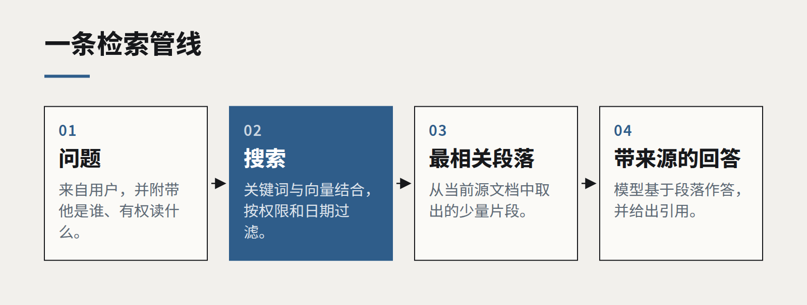

先做检索，再谈微调
模型不懂你的业务时，第一反应往往是去训练它。十次里有九次，更好的办法是在对的时刻把对的文档递给它。

通用大语言模型对世界了解很多，对你的定价政策、产品目录和上个月的董事会纪要却一无所知。团队意识到这一点时，第一个想法通常是微调：拿来模型，喂进公司文档，教会它懂业务。
这个直觉可以理解，但对大多数业务问题来说，它不是正确的第一步。更好的起点是检索：针对每个问题找出少量相关段落，在模型作答时把它们放在它面前。
两种技术各自擅长什么
微调改变的是模型的行为方式。它擅长教风格、格式和窄技能：永远按这个结构回答、把工单分进我们的十二个类别、用我们的品牌语气写作。它不擅长教事实，更不擅长教会变化的事实。一个在三月学会了你价目表的微调模型，到了九月依然会自信地报出三月的价格。
检索改变的是模型在作答那一刻知道什么。事实留在你的文档和数据库里——它们本来就在那里，也本来就有人维护。更新源头，下一个回答就会反映出来。不需要重新训练，不需要新的模型版本，企业知道的和模型相信的之间也不会出现漂移。

为什么检索应该先做
- 新鲜。 知识留在记录系统里，模型每次读到的都是当前版本。
- 可引用。 因为模型基于具体段落作答，它可以把段落展示出来。用户能核对来源，错误答案也能追溯到错误或缺失的文档。
- 权限。 检索可以尊重“谁在问”。员工看到的答案来自他有权阅读的文档，客户只看到公开资料。微调模型没有这样的边界——它学到了什么，就可能对任何人说出来。
- 成本与可逆性。 检索管线就是普通软件：一个索引、一步搜索、一段提示词，一个下午就能改。一次微调则是一个训练任务、一轮评估，外加一个新产物要管理。
检索项目真正出错的地方
大多数令人失望的检索系统，失败原因都很朴素：文档过时、重复或互相矛盾；分块切在表格中间，答案在一边、表头在另一边；搜索步骤找到的段落和问题共享字面词语却不共享含义；没人衡量过到底有没有检索到正确段落，于是所有失败都被怪到模型头上。
解决办法是先把检索当成搜索问题来做。整理一小批真实问题及能回答它们的段落，在衡量模型文笔之前，先衡量管线能否找到这些段落。混合检索——关键词匹配加向量相似度——通常值得多花这一点功夫。清理源文档，这是整个项目里最不起眼、也最有效的一步。
什么时候值得微调
当检索已经运转良好，而某种具体、稳定的行为仍然不对时，微调才开始划算：输出必须严格遵守某个结构；有数千条标注样本的分类任务；或者需要一个更小更便宜的模型，在某件窄任务上追平大模型。即便如此，两者也能很好地结合。一个学会了如何阅读和引用你的文档的微调模型，配上一条好的检索管线，往往是最强的方案。
但请从检索开始。它更便宜、更安全，而且对自己的答案来自哪里是诚实的。